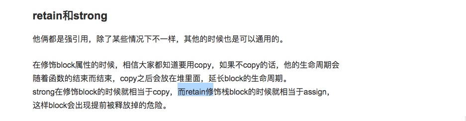

1. 判断字符character是不是英文字母 是的话返回1 否则返回0
isalpha(chanracter)
2. 判断一个字符串是否全为空格
[[string stringByTrimmingCharactersInSet:[NSCharacterSet whitespaceCharacterSet]] length]==0
3. 数组排序方法
NSSortDescriptor *timeDescriptor = [[NSSortDescriptor alloc] initWithKey:@"creatTime" ascending:NO];
NSArray *inviteNoticeArray = [noticeRecordModelArray sortedArrayUsingDescriptors:@[timeDescriptor]];
4. 自动调节字体大小
`adjustsFontSizeToFitWidth`这个属性的意思是根据UILabel的宽度来自动适应字体大小，但要注意的是，这个属性不会让字体变大，只会缩小，所以开始的时候，可以设置字体fontSize大一点。
5. %s 为c语言字符串的输入输出控制格式
6. NSString 转化为 char *
```objc
NSString * str＝ @“Test”;
const char * a =[str UTF8String];
```
7. 按属性字段排序
NSSortDescriptor *timeDescriptor = [[NSSortDescriptor alloc] initWithKey:@"createTime" ascending:NO];
NSArray *noticesArray = [[UserDataManager sharedInstance].userNotifyInfoArray sortedArrayUsingDescriptors:@[timeDescriptor]];
8. auyolayout拉伸压缩
`Content Hugging Priority`(控件抗拉伸优先级) 优先级越高越不容易被拉伸，默认是250。
`Content Compression Resistance Priority`(控件抗压缩优先级) 和拉伸一样，优先级越高的越不容易和压缩，默认是750。
9. 从字符串中获取类名
NSClassFromString(@"UIView")
10. 视图点击拦截
对于一个视图遮盖另外一个视图,如果上面视图是hidden或者alpha值为0是可以点击到后面的视图,但是如果上面的视图是clearColor 那么是点不到后面的视图的
11. CGRectInset、 CGRectOffset
//该结构体的应用是以原rect为中心，再参考dx，dy，进行缩放或者放大。
CGRect CGRectInset (
CGRect rect,
CGFloat dx,
CGFloat dy
);
// 相对于源矩形原点rect（左上角的点）沿x轴和y轴偏移, 再rect基础上沿x轴和y轴偏移
CGRect CGRectOffset(
CGRect rect,
CGFloat dx,
CGFloat dy
);
12. 无限重复动画
//我们可以通过指定这个“options:UIViewAnimationOptionRepeat”实现无限重复动画
//注意这个‘delay’是动画开始前的延迟而不是动画重复之间的延时,动画重复之间的延时这里是没法设置的
[UIView animateWithDuration:offset/50 delay:2 options:UIViewAnimationOptionRepeat animations:^{
self.firstLabel.transform = CGAffineTransformMakeTranslation(-offset, 0);
self.secondLabel.transform = CGAffineTransformMakeTranslation(-offset, 0);
} completion:^(BOOL finished) {
self.firstLabel.transform = CGAffineTransformIdentity;
self.secondLabel.transform = CGAffineTransformIdentity;
}];
13. KVC
所有的NSObject子类实现了KVC（键-值-编码）协议，可以用 - setValue:forKey:和-valueForKey:方法来存取属性，但是这个类需要有与之对应的属性.。但是CAAnimation 有一个不同的性能：它更像一个NSDictionary，可以让你随意设置键值对，即使和你使用的动画类所声明的属性并不匹配。
14.改变push动画效果
[self.navigationController.view.layer addAnimation:transition forKey:nil];
15. 设置cell的accessView
设置cell的 accessView相当于把cell变短了
设置tableView分割线颜色
tableView.separatorColor = ICColorOfDividingLine;
Json格式化option
//option为0 解析出来的字符串是没有被格式化的即没有回车换行
[NSJSONSerialization dataWithJSONObject:self options:0 error:nil]
//option为NSJSONWritingPrettyPrinted 解析出来的字符串是被格式化的即存在回车换行方便阅读
[NSJSONSerialization dataWithJSONObject:self options:NSJSONWritingPrettyPrinted error:nil]
16.retain和strong

17.逆序枚举
//1.原始数组
NSMutableArray *array = [NSMutableArray arrayWithObjects:@"1",@"2",@"3",nil];
//2.倒序的数组
NSArray* reversedArray = [[array reverseObjectEnumerator] allObjects];
NSLog(@"------- 枚举器法---------");
//ObjectEnumerator 正序
//reverseObjectEnumerator 逆序
NSEnumerator *enumerator = [array reverseObjectEnumerator];
id obj = nil; //不确定数组里面具体对象的类型，所以定义成id 类型指针
while (obj = [enumerator nextObject]) { //通过枚举器，取数组里面的每一个元素
NSLog(@"%@", obj); //将元素赋给 obj， 直到数组结束
//取到的结果为nil，退出while
}
18.大端小端
对于iPhone采用的是小端模式
补充:
Little endian和Big endian
上一节已经提到，Unicode码可以采用UCS-2格式直接存储。以汉字"严"为例，Unicode码是4E25，需要用两个字节存储，一个字节是4E，另一个字节是25。存储的时候，4E在前，25在后，就是Big endian方式；25在前，4E在后，就是Little endian方式。
这两个古怪的名称来自英国作家斯威夫特的《格列佛游记》。在该书中，小人国里爆发了内战，战争起因是人们争论，吃鸡蛋时究竟是从大头(Big-Endian)敲开还是从小头(Little-Endian)敲开。为了这件事情，前后爆发了六次战争，一个皇帝送了命，另一个皇帝丢了王位。
因此，第一个字节在前，就是"大头方式"（Big endian），第二个字节在前就是"小头方式"（Little endian）。
那么很自然的，就会出现一个问题：计算机怎么知道某一个文件到底采用哪一种方式编码？
Unicode规范中定义，每一个文件的最前面分别加入一个表示编码顺序的字符，这个字符的名字叫做"零宽度非换行空格"（ZERO WIDTH NO-BREAK SPACE），用FEFF表示。这正好是两个字节，而且FF比FE大1。
如果一个文本文件的头两个字节是FE FF，就表示该文件采用大头方式；如果头两个字节是FF FE，就表示该文件采用小头方式。
19.图片呈现过程
1.初始化阶段：从磁盘初始化图片，生成一个未解压缩的 UIImage 对象；
2.解压缩阶段:UIImage 对象进行解压缩
3.绘制阶段:绘制到屏幕上
图片解压缩的过程其实就是将图片的二进制数据转换成像素数据的过程
20.更改视图frame 和 设置transform 进行动画的区别
对于一个视图 我们更改其frame来做动画 不论子视图是否与其有约束关系 那么子视图frame是不会改变的,即子视图是不会跟着做动画的
而用transform的话 不论子视图是否与其有约束关系,子视图是会随着其一起变化的
21.运算符重载
运算符重载，就是对已有的运算符重新进行定义，赋予其另一种功能，以适应不同的数据类型。
22.unicode utf-8
已知"严"的unicode是4E25（100111000100101），根据上表，可以发现4E25处在第三行的范围内（0000 0800-0000 FFFF），因此"严"的UTF-8编码需要三个字节，即格式是"1110xxxx 10xxxxxx 10xxxxxx"。然后，从"严"的最后一个二进制位开始，依次从后向前填入格式中的x，多出的位补0。这样就得到了，"严"的UTF-8编码是"11100100 10111000 10100101"，转换成十六进制就是E4B8A5。